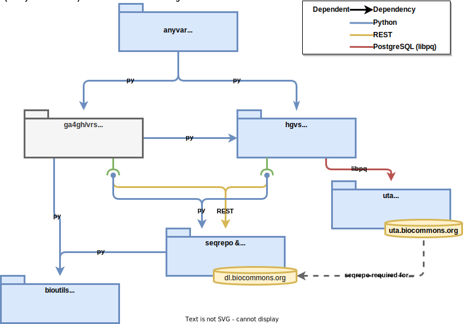

Projects#
Relationships among biocommons projects
(click to enlarge) 
Active projects#
-
anyvar (alpha) is a proof-of-concept variation translation, validation, and registration service.
-
bioutils provides common tools and lookup tables used primarily by the hgvs and uta packages
-
eutils simplifies searching, fetching, and parsing records from NCBI using their E-utilities interface
-
hgvs parses, formats, validates, normalizes, and transforms sequence variant expressions according to HGVS Nomenclature
-
SeqRepo stores biological sequences in a non-redundant, compressed, journalled, file-based storage.
-
The seqrepo-rest-service provides a REST interface to biological sequences and sequence metadata using a seqrepo instance backend.
-
UTA (Universal Transcript Archive) is a comprehensive archive of genome-transcript alignments; multiple transcript sources and versions, multiple genomic references, and multiple alignment methods, particularly splign (NCBI) and (blat) (UCSC)


Administrative Repos#
-
.github This is our repo or workflows and issue templates
-
biocommons.example This is our template repo


{kind=link}
Related external projects#
- ga4gh/vrs-python is an implementation of the Variation Representation Specification.